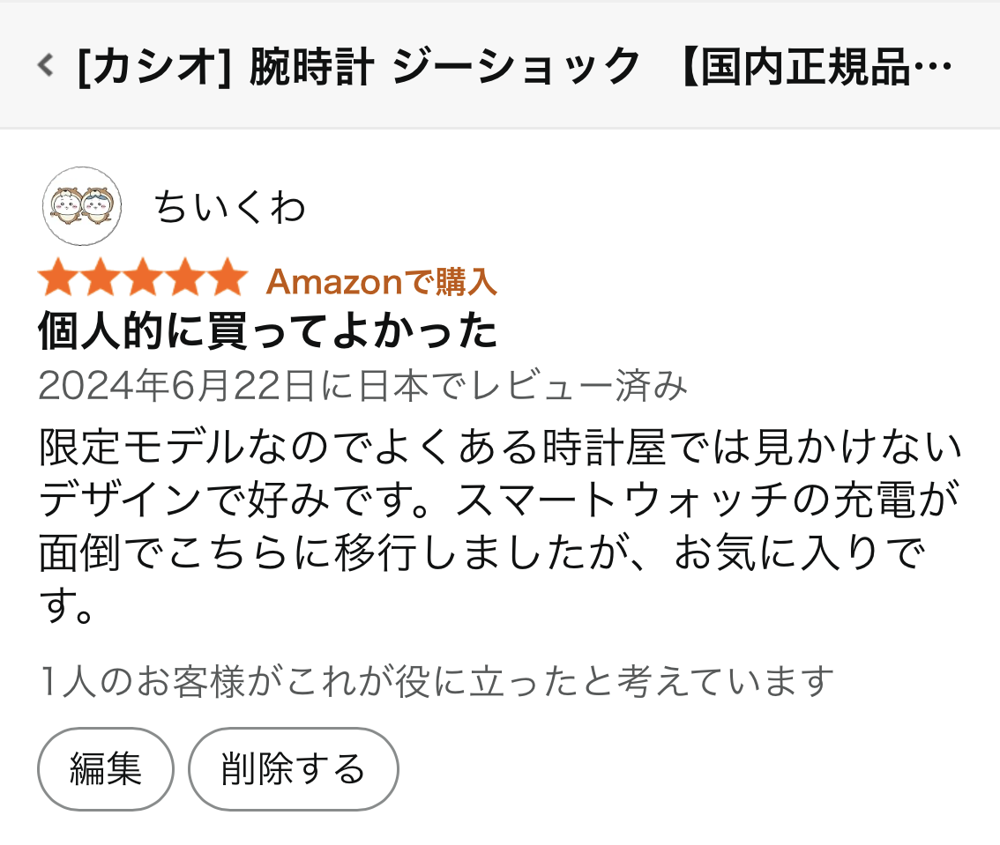

今回レビューするG-SHOCKの限定モデルは、「人と被らないデザイン」「電池交換式の気軽さ」「高い耐久性」が魅力の一本です。 スマートウォッチの充電に疲れて乗り換えたという口コミもあり、 “毎日充電したくない派”にとって非常に相性の良い時計だと感じました。
添付の口コミでは、ユーザーが「限定モデルのデザインが他店では見かけない」「買ってよかった」と高く評価していました。 スマートウォッチの充電が面倒で乗り換えたという声もあり、電池交換式の気軽さが大きなメリットとして挙げられています。
G-SHOCKはシリーズによって細かなデザイン差があり、限定モデルは特に希少性が高く、 「人と被らない時計が欲しい」というニーズに強く応える点が口コミから読み取れます。
G-SHOCKは1983年の誕生以来、世界的に支持されている耐久時計ブランドです。 その理由は以下のような、特許技術を含む実証された構造的メリットにあります。
これらの特徴は単なるイメージではなく、G-SHOCKが長年培ってきた技術と実績に基づくものです。 特に「耐衝撃構造」はブランドの象徴であり、他社が容易に模倣できない独自性があります。
G-SHOCKは総合的に優れた時計ですが、以下の点は事前に理解しておくと安心です。
口コミからも分かる通り、G-SHOCKの限定モデルはデザイン性・希少性・実用性のバランスが非常に優れています。 スマートウォッチのような充電の手間がなく、耐久性も高いため、日常使いからアウトドアまで幅広く活躍します。
「人と被らない時計が欲しい」「長く使える相棒が欲しい」という人には、非常に満足度の高い選択肢と言えるでしょう。
▶ Amazonで商品を見る※本リンクはAmazonアソシエイトを通じて収益を得る場合があります。